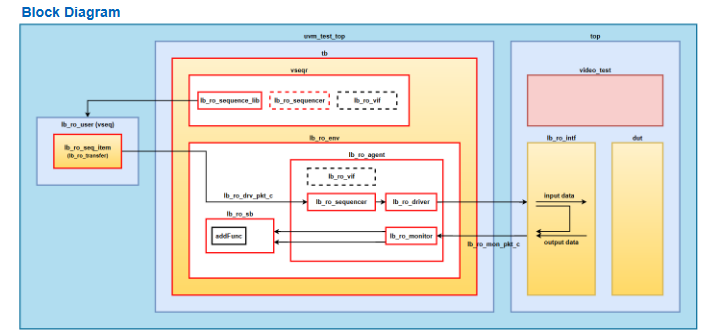

UVM Verification
Linebuffer UVM Verification
Line Buffer를 Frame Size와 Data Mode에 따른 UVM 환경 검증
Interconnect부터 실리콘의 논리까지.
데이터의 흐름을 설계하고, 시스템의 신뢰를 검증합니다.

수많은 변수 속에서도 예측 가능한 결과를 만들어내는 것을 목표로 합니다. 단순한 기능 구현을 넘어, 철저한 검증 시나리오를 통해 오차 없는 시스템을 완성하는 데 집중하는 Digital Logic Designer입니다.
Line Buffer를 Frame Size와 Data Mode에 따른 UVM 환경 검증
FPGA를 이용하여 이미지 데이터를 모니터로 출력하는 VGA 타이밍 컨트롤러 및 필터 시스템 구현
다양한 센서와의 통신을 위한 직렬 통신 프로토콜(SPI, I2C) 마스터/슬레이브 컨트롤러 설계 및 검증
SoC 내 저속 주변장치 제어를 위한 AMBA APB 프로토콜 기반의 IP 설계 프로젝트
RISC-V 32I 명령어 셋을 지원하는 Single Cycle 프로세서를 설계하고 구현
디지털 카운터 모듈을 설계하고 체계적인 시뮬레이션을 통해 동작 검증 프로젝트
FPGA를 활용한 UART 통신 기반 clock & 2 sensor 통합 시스템 구현
VerilogHDL/UVM, ARM Cortex-M, SoC(AXI) 설계 및 검증 실무 교육 (950h) 이수 중